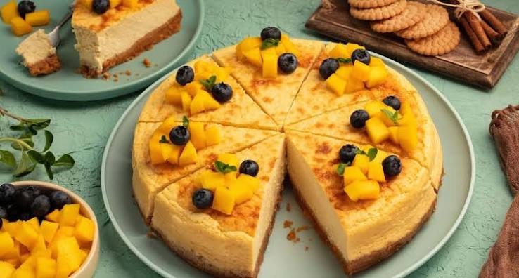
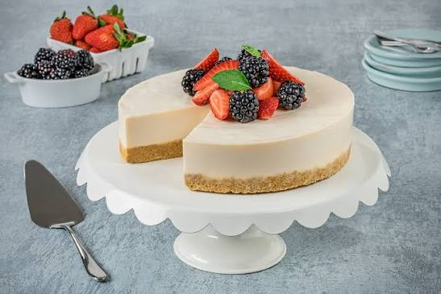
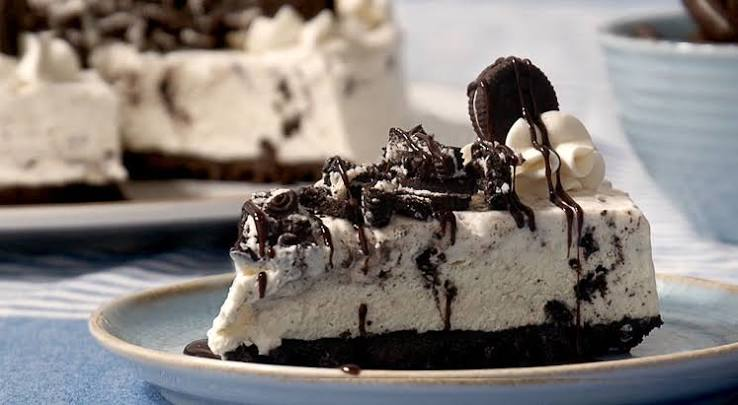
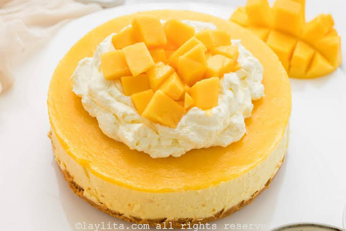

Sin horno
Siempre frescosCheesecakes fríos
El placer de lo cremoso
En Softy Cakes creamos cheesecakes fríos, sin horno, con ingredientes de alta calidad y mucho amor, para que cada bocado sea una experiencia única.
Descubre nuestros cheesecakes
Ingredientes de calidad
Lo mejor en cada recetaHechos con mucho amor
Porque se notaRequieren refrigeración
Para mantener toda su frescura
Softy Cakes
Más que un postre, una experiencia.
Somos un emprendimiento dedicado a crear cheesecakes fríos que endulzan tus momentos especiales. Creemos en los pequeños placeres, en la calidad y en la felicidad que un buen postre puede dar.
Conoce másRecetas artesanales
Hechas con pasión y dedicación.
Productos frescos
Ingredientes seleccionados de primera.
Tu satisfacción
Es nuestra mayor alegría.
Nuestra especialidad
Nuestros Cheesecakes
Descubre una variedad de sabores, texturas y presentaciones. Cada cheesecake está elaborado con ingredientes seleccionados para ofrecerte el mejor sabor.
Ver tienda
Clásicos
Los sabores que nunca fallan.

Especiales
Para los más golosos.

Temporada
Sabores únicos por tiempo limitado.
¿Listo para disfrutar?
Haz tu pedido